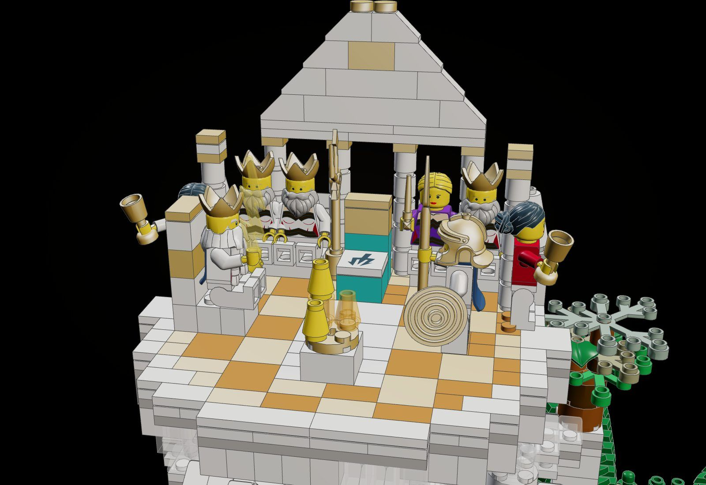
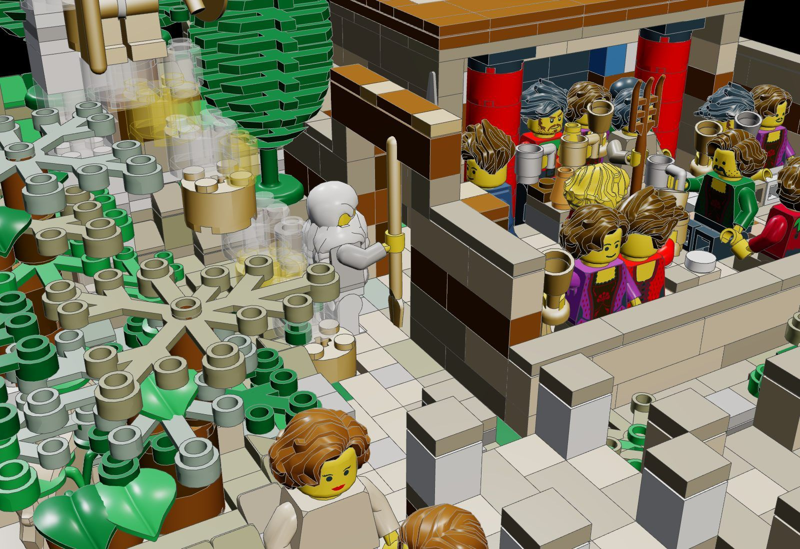
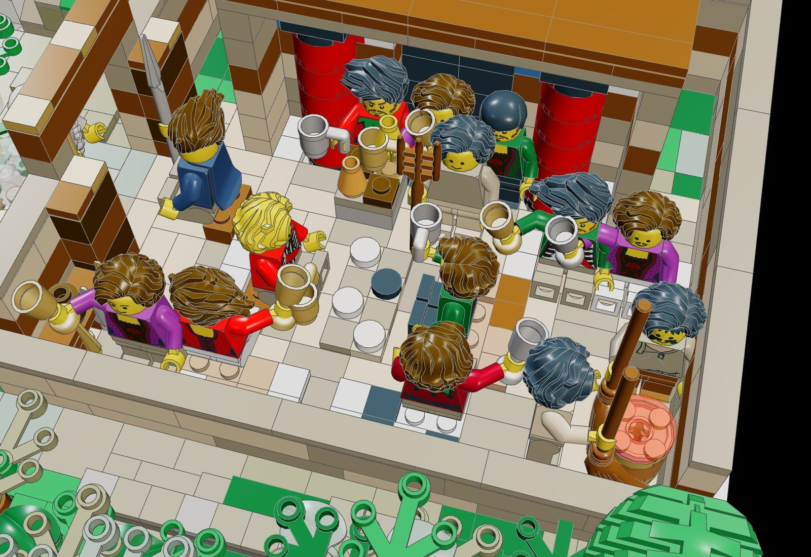
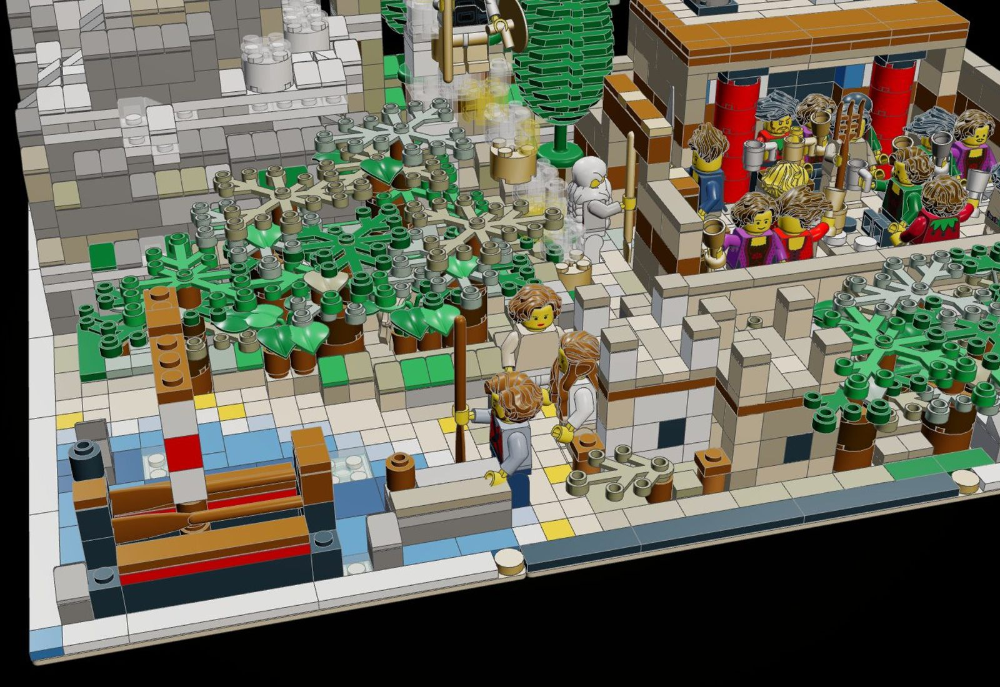
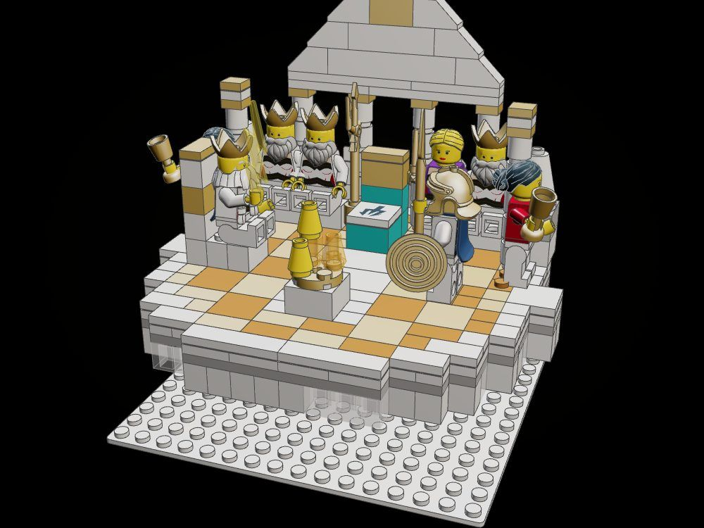
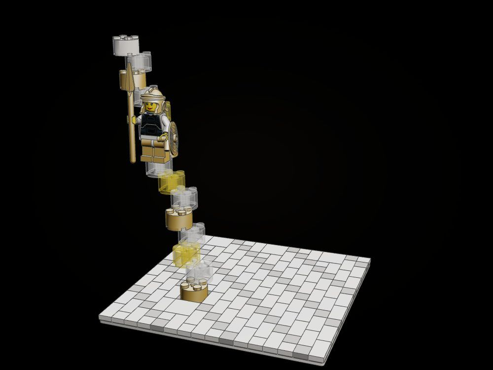
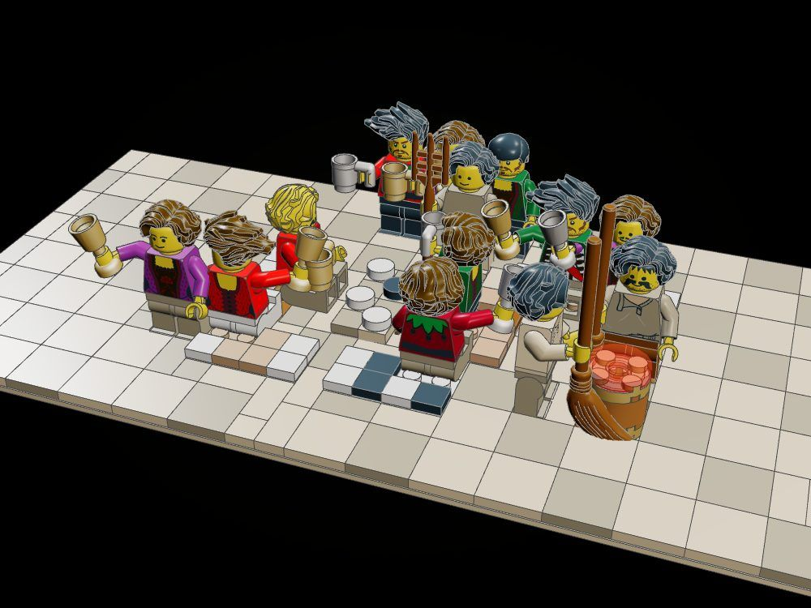
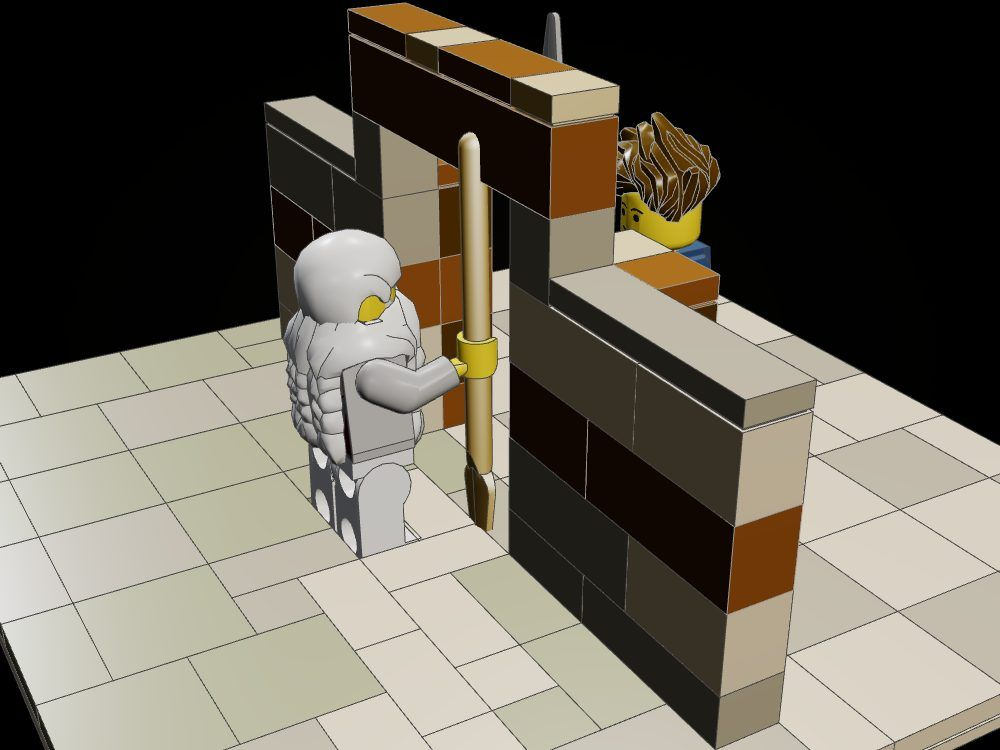

Tell Me of the Man
While Poseidon is away among the Ethiopians the gods sit in council on Olympus, Zeus on one side and Athena answering him on the other before the sea-god's empty throne; Athena binds on her golden sandals and darts down from the peaks, and stands at the outer gate of Odysseus's house as Mentes, spear in hand, where the suitors lounge on the hides of the oxen they have killed, playing at draughts, and Telemachus, sitting among them, is the first to see her.
"Tell me, O Muse, of the man of many devices, who wandered full many ways after he had sacked the sacred citadel of Troy." (Odyssey I.1-2, tr. A. T. Murray)

The object
The council turns. The whole platform of Olympus stands on a 4 x 4 turntable (61485c01) on the top of the column: turn it and the hall, thrones, gods and all, comes round from facing the viewer to looking down on Ithaca and the palace (set.the-opening-turned). The poem opens on exactly that turn: with Poseidon away, the gods turn their minds to Odysseus. Poseidon's empty throne, marked with his trident, is at the centre of the turn.





How it is built
- Olympus is a sculpted column of rock (tools/forage/product/sculpt.py) with three cloud shelves standing well out from it: each shelf is a course laid in three plates bonded crosswise (white, clear-and-grey, white) so it can overhang, with puffs of round bricks on it and crags jutting between.
- The platform is a disc of plates on a 4 x 4 turntable: a bronze floor of pearl-gold and dark-orange squares with a white rim and a white aisle to the empty throne, a colonnade of white round bricks under a stepped white pediment, a crest of snow on the back rim, cloud hanging under its edge.
- Athena's flight is a trail of 2 x 2 round bricks, each a course lower and a stud on, clicked one to the next from the high cloud shelf to the ground by the gate; the goddess stands half way down it with golden legs for the sandals.
- The palace front is ochre ashlar with a timber course and a fresco frieze, red Minoan columns with black capitals in the porch, the dark hall behind the open door, the upper rooms with a window, and the smoke of the feast wavering up from the roof in grey and clear round bricks.
- The forecourt is paved in running bond; the suitors sit on spotted ox-hides round a raised draughts board with its pieces; the heralds mix wine in a bronze krater; Telemachus sits on a stool facing the gate.
- Ithaca around it: olive terraces with dry-stone faces and three-tier olives, vines, a road of light stones climbing from the cove between low walls, swells of grassy ground in plates, two houses with a well and a goat-pen, a rocky knoll with goats and their herdsman, cypresses and pines on the shoulder of the hill, a black ship at a stone mole.
- Every card checks clean: every part clicked, no two parts in the same space; the nameplate and white tile ring are the line's display base.
The builds inside the build

Olympus: the council on its turntable
The platform of Olympus on its turntable, lifted off the column and set on a short cloud stand: the bronze floor, the colonnade and pediment, the snow crest, the thrones of Zeus and of absent Poseidon, the gods on their bench.

Athena's flight
The trail of clear, trans-yellow and pearl-gold round bricks, each a course lower and a stud on, with Athena in her own form half way down it, her legs gold for the golden sandals.

The suitors at draughts on the ox-hides
The forecourt feast on its own paving: the ox-hides, Antinous and Amphinomus at draughts, the loungers with their cups, the heralds at the krater, the steward and the men in the porch.

The stranger at the gate
A length of the court wall with the outer gate, its leaves swung back, the lintel; Telemachus on his stool inside, Mentes outside with the bronze spear.
What the checker says
| Build | File | Pieces | Loose | Clashes |
|---|---|---|---|---|
| Tell Me of the Man (the whole kit) | set.the-opening | 3,043 | 0 | 0 |
| The council turned toward Ithaca | set.the-opening-turned | 3,043 | 0 | 0 |
| Olympus: the council on its turntable | set.the-opening-olympus | 492 | 0 | 0 |
| Athena's flight | set.the-opening-descent | 183 | 0 | 0 |
| The suitors at draughts on the ox-hides | set.the-opening-suitors | 329 | 0 | 0 |
| The stranger at the gate | set.the-opening-gate | 149 | 0 | 0 |
In the film


Still to do
- Figures, the trident, the spears, oars and the leaves of the trees are placed by hand and are not checked by the tool; the seated pose (thighs on the studs) is computed, not verified in a real build.
- The trail of round bricks is joined one stud-row to the next (a 1 x 2 overlap on 2 x 2 round bricks): honest on the grid, but it would want a clear support rod in a real model.
- The turntable carries an 18-stud disc and eight figures on one 4 x 4 bearing; a real build should brace the disc with a second layer of long plates (it has two) and test it for sag.
- The court is crowded: at the hero's distance the draughts board and the hides read only from above.
- The cloud shelves under the platform merge with the hanging cloud ring into one white mass from some angles.
- Homer puts the suitors in front of the doors and Athena at the outer gate; the kit compresses the court so both fit, and the palace is a front and a courtyard, not a full megaron.
- Piece count sits at the low end of the flagship budget; the hill of Neriton and the town could take more.